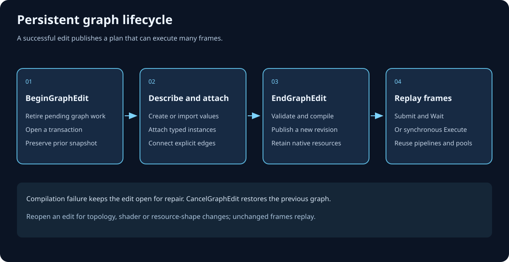
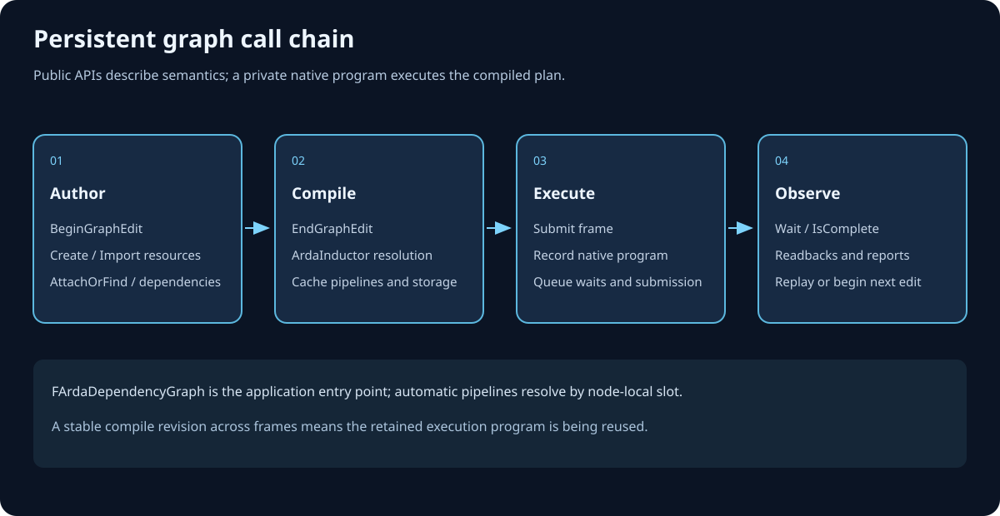

Identity, causality, lowering, and lifetime
Architecture
ArdaRenderGraph is a builder-scoped compiler and executor. Dense typed handles name append-only arena records; reflective parameters create hazard history; prologue and epilogue sentinels define graph boundaries; compilation lowers declarations without recording GPU work; execution materializes physical resources, records dependency waves, and submits in deterministic registration order.
Learning objectives
After this chapter, you should be able to:
- derive ARDG's core data structures from stable identity, deterministic traversal, and bulk-lifetime requirements;
- explain why typed handles are graph-local indices while logical
*Refaliases are non-owning record pointers; - trace ownership through the builder implementation, arena, registries, pass callbacks, RHI references, and GPU timeline;
- use the blackboard without confusing type-keyed setup data with dependency-tracked resources;
- explain prologue and epilogue roles in import history, output liveness, and final transitions;
- derive RAW, WAW, and WAR edges from latest-writer and reader-epoch history;
- explain why execution order is a registration-order subsequence and why manual backward edges are rejected;
- trace build, compile, materialization, recording, queue waits, submission, extraction, and cleanup through current source; and
- separate textbook render-graph theory from the exact optimizations and limits implemented today.
Prerequisites
Complete Getting started. Review DAGs, registration order, resource hazards, liveness, arena allocation, resource aliasing, and synchronization.
The primary public sources are Source/ArdaRenderGraph/Public/ArdaRenderGraphDefinitions.h, ArdaRenderGraphResources.h, ArdaRenderGraphParameters.h, ArdaRenderGraphPass.h, ArdaRenderGraphBlackboard.h, and ArdaRenderGraphBuilder.h. Exact implementation facts below come from Private/ArdaRenderGraphBuilder.cpp, ArdaRenderGraphCompiler.cpp, ArdaRenderGraphExecutor.cpp, ArdaRenderGraphRegistry.h, ArdaRenderGraphAllocator.*, and ArdaRenderGraphBuilderInternal.h.
Design derivation: from requirements to structures
Start with five requirements and derive the architecture rather than memorizing class names.
- Stable identity. Pass setup stores references to graph records, compile products store pass/resource identities, and callbacks run later. Records cannot move or be individually invalidated during the graph.
- Category safety. A texture index must not accidentally index a pass or buffer collection.
- Determinism. Whole-registry traversal, output reports, culling, and submission need a stable order independent of pointer values or hash iteration.
- Cheap graph teardown. Hundreds of small records and parameter copies should share one lifetime and release as a unit while still running non-trivial destructors.
- Whole-workload reasoning. Resource accesses must become dependency and state data before callbacks record commands.
The resulting design uses typed integer handles for category-safe identity, append-only vectors for deterministic registration order, arena allocation for stable addresses and bulk release, generated metadata for access discovery, and a stateful builder whose phases close mutation before analysis.
Typed handles and append-only registries
Handle representation
TARDGHandle<TagType> stores one uint32_t. The maximum value is InvalidIndex; a default-constructed handle names no entry. Empty tag types create distinct aliases such as pass, texture, buffer, acceleration-structure, view, and uniform-buffer handles. The source tests assert that pass handles are four bytes, trivially copyable, and not convertible to texture handles.
A handle is meaningful only with the matching registry in the builder that produced it. It contains no builder identifier or generation count. Copying a numeric handle into another builder does not make it portable; at best it resolves to an unrelated same-index record, and graph-owned pointer validation catches common cross-graph misuse.
Registry representation
The private TARDGHandleRegistry<ObjectType, HandleType> in Private/ArdaRenderGraphRegistry.h stores an eastl::vector<ObjectType*>. Emplace wraps the current vector size in the typed handle, constructs a record in the shared arena, and appends its pointer. No record is individually erased or moved.
registration: PassA, PassB, PassC
vector slots: [ 0 ], [ 1 ], [ 2 ]
handles: P0 P1 P2
arena objects: ^ ^ ^
stable addresses until builder destructionTryGet- Returns null for an invalid or out-of-range handle. Use this when absence is an expected query outcome.
Get- Performs the same lookup and raises a fatal check if no record exists. Use this only where invalid identity is a programming error.
GetEntries- Exposes stable handle-index order to builder and compiler stages. That order is also registration order.
Logical references are not owners
FARDGTextureRef, FARDGBufferRef, and related aliases are raw pointers to arena-owned logical records. They provide convenient setup and callback parameter syntax but do not increment ownership. They expire with the builder. By contrast, fields such as FARDGTexture::mTexture hold intrusive RHI references to physical resources after import or materialization.
Arena allocation and ownership
The private FARDGArena owns aligned byte blocks. It allocates monotonically within compatible blocks and adds a new block when no current block fits. Existing objects never move. Non-trivially destructible objects register type-erased destructor callbacks; Reset() runs them in reverse construction order before releasing blocks.
Why a graph arena fits
- Passes, resource records, views, and frozen parameters share exactly one builder lifetime.
- Stable pointers make logical
*Refaliases and frozen callback parameters safe across build and compile. - Allocation avoids one general-purpose heap transaction per small record.
- Bulk reset is predictable while registered destructors preserve ordinary C++ cleanup for strings, vectors, and callbacks.
Builder implementation ownership
FARDGBuilder::FImpl in Private/ArdaRenderGraphBuilderInternal.h declares the context, then arena, then arena-using registries. It also owns frozen-address tracking, imported-identity maps, extraction records, the blackboard, compile and execution results, physical-access synchronization, and lifecycle flags.
- Graph context
- Retains the device and copies queue/debug policy for the complete builder lifetime.
- Arena and registries
- Own graph records and parameter bytes. Registries retain non-owning pointers into the arena.
- Imported maps
- Map non-owning physical identities to one logical wrapper and reject conflicting initial-state registration.
- Extraction records
- Retain logical pointers and caller-owned output addresses until execution publishes physical references.
- Compile/execution results
- Are builder-owned stable products. References returned by public methods expire with the builder.
- RHI and GPU lifetime
- Intrusive RHI references own physical objects on the CPU side. Submitted queue work imposes a separate effective lifetime until GPU completion.
Tradeoff
Arenas make per-object removal, long-lived individual records, and builder reuse unnatural. ARDG accepts that constraint because one graph is intentionally short-lived and one-shot. Long-lived state should live in renderer owners or extracted RHI references, not in logical graph records.
Graph-scoped typed blackboard
FARDGBlackboard maps std::type_index to eastl::any. There is at most one copy-constructible value per C++ type. Set replaces, Emplace constructs then stores, Contains queries, TryGet returns null for absence, Get fatally checks absence, and GetOrCreate default-constructs when needed.
Appropriate use
The blackboard coordinates setup code that does not share a direct call chain: frame dimensions, renderer feature records, logical resource bundles, or pass handles can be stored by an application-defined type. The mutable GetBlackboard() overload is legal only while building; the const overload remains readable later.
What it does not do
- It does not derive pass dependencies from values merely stored in it.
- It does not provide string keys or multiple values of one type; define wrapper types when identities differ.
- It does not make mutable shared setup data thread-safe.
- References into it do not outlive the builder.
When a blackboard value contains a logical resource, the resource becomes dependency-visible only when a pass parameter declaration references it. The blackboard is coordination storage, not an alternate resource declaration system.
Prologue and epilogue sentinels
FARDGSentinelPass is a pass with NeverCull and mbSentinel = true. Sentinels execute no user callback; they anchor boundary state, liveness, and transitions.
Prologue
FARDGBuilder::FImpl creates GraphPrologue as the first pass, so its handle is the first pass-registry index. Registering an external texture, buffer, or acceleration structure records the prologue as its latest producer. The first graph use therefore depends on graph-entry contents and state rather than appearing to read an unproduced graph resource.
Epilogue
The compiler appends GraphEpilogue after pre-compile validation. For external and extracted resources, the latest writer becomes an epilogue data producer and trailing readers become synchronization-only producers. This has three effects:
- the writer chain feeding observable outputs remains live;
- trailing reads are ordered before graph exit without making dead read work a liveness root; and
- final state transitions for external and extracted resources have one synthetic destination.
Dependency graph and hazard derivation
Registration-time history
Each viewable logical resource records one latest writer and a reader set since that write. During AddPassInternal, generated metadata is visited in declaration order. For each texture, buffer, or acceleration-structure access:
- validate that the logical record belongs to this graph and the requested state is known;
- record the pass's state requirement and mark resource use;
- add the latest writer as a data producer when one exists;
- for a read, add the current pass to the reader epoch;
- for a write, add every prior reader as a synchronization-only producer, clear readers, and make this pass the latest writer.
Why two edge kinds
- RAW: read after write
- The reader consumes data from the latest writer. This is a data-producer edge and participates in backward liveness.
- WAW: write after write
- The later writer must follow the earlier writer. This also uses a data-producer edge.
- WAR: write after read
- The later writer must not race prior readers, but those readers do not produce its value. ARDG uses synchronization-only edges so ordering is preserved without keeping otherwise dead readers live.
Granularity
Build-time hazard history is whole-resource for both textures and buffers. Texture subresource ranges and buffer byte ranges are retained in pass state. Compilation tracks texture transitions and read-before-produce validation per mip and array slice, while buffer transition state remains whole-resource. This is a conservative dependency model: disjoint texture subresources can receive precise states, but their build-time hazard history can still order at whole-texture granularity.
Forward-edge invariant
Because accesses are processed when a pass is appended, inferred predecessors already have smaller handles. AddDependency() enforces the same direction for manual causality. The compiler sorts producer lists, validates that every edge points strictly forward, and mirrors them into consumer lists.
This makes registration order a valid topological order by construction. Culling then emits live entries by registry traversal, so execution order is exactly a registration-order subsequence. ARDG does not run a general topological sort and does not reorder independent passes for an alternative schedule.
Device-independent compilation pipeline
Private/ArdaRenderGraphCompiler.cpp performs an ordered lowering pipeline. The important ordering constraints are:
- Validate declarations first. Dead work cannot hide invalid resource declarations, ownership, flags, queue states, ranges, or read-before-produce defects.
- Validate extracted production. A graph-created extracted texture or buffer must have a producer.
- Append and connect the epilogue. External and extracted outputs become liveness and final-state roots.
- Assign pipelines. Immediate mode and sentinels use graphics. Eligible copy or async-compute passes use specialized queues only when capability and state checks pass; otherwise they fall back to graphics.
- Build reverse adjacency. Producer and synchronization-predecessor lists are validated and mirrored to consumers.
- Cull. Normal mode walks data producers backward from epilogue and
NeverCullroots. Synchronization-only edges do not extend liveness. Immediate mode keeps every pass. - Rebuild live intervals. Build-time usage includes dead declarations, so resource first/last use is cleared and replayed over only the live sequence.
- Emit lifetimes. Handles are translated to compact execution-order indices. Only graph-owned transient, non-external, non-extracted textures and buffers become reuse candidates.
- Lower logical barriers. Compatible reads merge, conflicting write states fail, texture cells and whole buffers advance through state history, equal UAV states request ordering, and epilogue transitions enforce final states.
- Validate transition continuity. Compiler products are checked before publication.
- Derive async metadata and cross-queue dependencies. Fork/join fields are descriptive; explicit queue-dependency records drive execution waits.
- Form raster groups. Adjacent compatible graphics raster passes sharing attachment signatures receive dense group indices.
- Publish last.
mbCompiledbecomes true only after all stages succeed.
Culling complexity and determinism
Backward reachability uses a worklist over producer edges, then registry traversal emits the result. Producer lists are sorted. Resource lifetimes are emitted in deterministic registry order. Queue dependencies are emitted in consumer execution order. These choices make DumpGraph() stable for equivalent registration.
Compile-time state versus runtime physical state
Compilation reasons about logical resources. Execution-local pooling can bind two disjoint logical lifetimes to one physical object. Therefore ArdaRenderGraphExecutor.cpp rebuilds transitions after materialization, keyed by each RHI object's physical identity, so the second logical user inherits the actual state left by the first rather than an obsolete descriptor initial state.
Lifecycle state machine and invariants

- Building
mbCompiled,mbCompiling,mbExecutionStarted, andmbFailedare false. Resource creation/import, parameter allocation, pass registration, dependencies, extraction, and mutable blackboard access are legal.- Compiling
mbCompilingcloses mutation and prevents compiler re-entry. Successful publication setsmbCompiled; subsequentCompile()returns the cache.- Executing
Execute()first obtains the cached or first compile result, then permanently setsmbExecutionStarted. A second start is fatal.- Executed
mbExecutedbecomes true only after submission, extraction publication, and device garbage collection. The execution result is then available.- Failed
- An execution scope guard sets sticky
mbFailedunless the entire CPU submission path completes. This prevents accidental replay after partial recording or submission.
Compilation is logically one result even though repeated calls can query it. Execution is physically one attempt. Fatal checks represent violated programming contracts rather than status-return recovery. The safe recovery unit after execution failure is a new builder, coordinated with whatever GPU submissions may already have occurred.
Complete source-backed call chain

ArdaRenderGraphBuilder.cpp, ArdaRenderGraphCompiler.cpp, and ArdaRenderGraphExecutor.cpp. It separates logical graph construction from device-independent compilation and physical execution.Build call chain
FARDGBuildercreatesFImpl, the arena-backed registries, and prologue.Create*orRegisterExternal*appends logical resources. External registration deduplicates by physical identity and installs prologue history.AllocateParametersconstructs stable arena storage, orAddPasscopies non-arena parameters.AddPassInternalappends a lambda pass, thenFARDGParameterMetadata::Enumeratevisits nested leaves in declaration order.FARDGSetupContextrecords exact views, states, raster bindings, resource use, producer edges, and synchronization-only edges.- Extraction marks a resource observable, sets final state, and stores caller output address.
Compile call chain
FARDGBuilder::Compile() guards lifecycle and delegates to FARDGCompiler::Compile. Validation runs before culling; epilogue is appended; queue selection, adjacency, culling, intervals, lifetimes, barriers, validation, async metadata, queue dependencies, and raster groups are emitted; the compiled flag commits last.
Execute call chain
FARDGBuilder::Execute()delegates toFARDGExecutor::Execute.- Lifecycle, previous failure, and device presence are checked; compile runs on demand.
- Transient heap layout is evaluated, but placed aliasing is not applied. Live textures and buffers acquire exact committed-resource matches or new resources; external handles are verified; uniform buffers get dedicated allocations.
- Physical transition history is rebuilt by physical identity and optional first-write clobbers are planned.
- Dependency levels partition CPU recording waves. Eligible passes record concurrently;
NeverParallel, immediate mode, and configuration can serialize them. - Each
RecordPasscreates and opens a queue-specific command list, disables automatic barriers, establishes state tracking, emits barriers/clobbers, opens the physical-access gate, invokes the callback, closes the gate, and closes the command list. - Uniform-buffer uploads submit on graphics. Non-graphics queues wait on that upload before first relevant use.
- Recorded lists submit in deterministic execution order. Cross-queue consumers wait on producer submission instances.
- Extraction references are assigned, device garbage collection runs, execution commits, and counters are traced.
Worked example: producer, dead reader, overwrite, extraction
Consider four passes registered in this order:
- P1 Produce A. Writes graph-created texture A.
- P2 Read A for diagnostics. Reads A but produces no observable output.
- P3 Overwrite A. Writes A again.
- P4 Consume A into B. Reads A, writes B, and B is extracted.
Setup derivation
- P1 becomes A's latest writer.
- P2 adds P1 as a data producer and joins A's reader epoch.
- P3 adds P1 as its data producer for WAW ordering, adds P2 as a synchronization-only producer for WAR ordering, clears readers, and becomes latest writer.
- P4 adds P3 as a data producer, then becomes B's latest writer.
- Extraction connects B's latest writer P4 to the epilogue.
Culling derivation
Backward liveness starts at epilogue, reaches P4 through B, reaches P3 through A, and reaches P1 through P3's data producer. It does not traverse P3's synchronization-only predecessor P2. P2 is therefore culled even though its original read had to precede P3 if it were live. Execution order is Prologue, P1, P3, P4, Epilogue: the registration-order subsequence of live passes.
State and lifetime derivation
Compilation advances A through P1's write state, P3's write state with any required UAV ordering, and P4's read state. B advances from its normalized initial state through P4's write and the epilogue's requested extraction state. Live intervals are expressed in the compact execution-order index domain, so P2 contributes neither use nor lifetime extension.
Execution derivation
A and B materialize only after compilation. If another compatible transient logical texture has a strictly earlier last use and shares one queue domain, the execution-local pool may reuse its committed physical object. Runtime transition rebuilding then follows physical identity so state remains continuous. The extracted B reference is assigned after submission, while GPU completion remains outstanding.
Checkpoint
Can you identify why P2 must appear in setup hazard history but must not stay live, why P3 cannot register before P1 under this architecture, why B's extraction roots P4, and why B's published reference is not yet a CPU completion signal?
Threading, platform, and performance architecture
Threading domains
- Build and compile
- Treat as thread-confined. Append-only structures and stable pointers do not provide concurrent mutation safety.
- Physical access validation
mPassAccessMutexprotects active pass gates and logical-to-physical resolution during parallel callback recording. One pass can have only one active execution context.- Parallel recording
- Dependency levels include data and synchronization-only producers. Eligible same-level passes record to distinct command lists and result slots. Shared callback captures remain the caller's synchronization responsibility.
- Submission
- Occurs deterministically in live registration order after recording waves complete. RHI queue waits—not CPU recording order—establish cross-queue GPU dependencies.
- Completion
- Occurs asynchronously on GPU queues. The builder does not wait for all submitted work before returning.
Performance model
- Dense handles and vectors favor compact identity and deterministic linear traversal.
- Arena allocation reduces small allocation overhead and guarantees stable setup pointers.
- Culling removes callbacks, physical materialization, barriers, and submissions for dead chains.
- Dependency waves expose CPU recording concurrency without changing deterministic submission order.
- Exact descriptor equality follows hash bucketing before committed-resource reuse, so collisions cannot authorize incompatible reuse.
- Reuse requires
availableAfter < firstUsebecause intervals are inclusive, and it is disabled for resources spanning queue domains. - Immediate mode intentionally disables culling, specialized queues, parallel recording, and narrow lifetimes to act as a correctness oracle.
Platform boundary
ARDG has no D3D12/Vulkan scheduling branch. It consumes opaque RHI descriptors, interfaces, resource states, queue types, physical identities, and capabilities. Platform variability enters through ArdaBackend's device context and RHI behavior. This keeps graph theory and renderer policy portable while preserving capability-driven fallback.
Implementation versus render-graph theory
“A render graph can” is not the same as “this render graph currently does.” The distinctions below prevent theoretical expectations from becoming false operational assumptions.
- Theory: any DAG can be topologically sorted
- Current ARDG: only forward edges are legal. Registration order is already topological, and execution preserves its live subsequence. There is no schedule search or arbitrary reordering.
- Theory: hazard analysis can be range-precise
- Current ARDG: dependency history is whole-resource. Texture transitions and production validation are per mip/slice; buffer transitions are whole-resource even though byte ranges are retained.
- Theory: transient resources can alias placed memory
- Current ARDG: an ideal interval layout is computed when capabilities permit, but physical placed aliasing is disabled because portable aliasing barriers and heap-compatibility queries are missing. Exact committed resources can still be recycled.
- Theory: queue scheduling can optimize overlap globally
- Current ARDG: pass flags request copy or async compute; capability and state checks either accept the request or fall back to graphics. Fork/join metadata is descriptive, and explicit dependencies drive waits.
- Theory: compatible raster passes can merge
- Current ARDG: adjacent compatible raster passes receive group metadata. The executor does not itself merge command lists or native render-pass objects from that grouping.
- Theory: compiled graphs can be replayed
- Current ARDG: compile results are cached for one builder, but execution is one-shot and physical resources/callback state are bound to that attempt.
- Theory: graph ownership can encompass all GPU resources
- Current ARDG: imports remain externally owned, extraction publishes retained RHI references, and callbacks can use a raw command-list escape hatch. External coordination remains explicit.
- Theory: graph completion can include GPU retirement
- Current ARDG: execution completes CPU submission only. RHI synchronization handles later GPU completion.
Failure modes: symptom, cause, prevention, recovery
- Handle resolves to null or the wrong graph record
- Cause: invalid, out-of-range, stale, or cross-builder identity. Prevention: keep handles and logical pointers within one builder lifetime and category. Recovery: use nullable lookup for expected absence; rebuild ownership routing when absence is unexpected.
- A logical pointer remains non-null after builder destruction
- Cause: raw pointers do not self-clear when arena storage is released. Prevention: scope logical references under the builder owner. Recovery: discard the pointer; never dereference or convert it into an RHI owner.
- Blackboard
Getfatally checks - Cause: no value exists for the exact C++ type. Prevention: use
Contains,TryGet, orGetOrCreatewhen absence is normal. Recovery: initialize the expected wrapper type during build. - External import conflicts
- Cause: one physical identity was registered with different initial states. Prevention: centralize external state ownership. Recovery: reconcile actual state and register once; do not create two contradictory logical histories.
- Backward or cyclic design cannot be expressed
- Cause: consumer was registered before producer or the conceptual workload contains a cycle. Prevention: register in dataflow order and break frame-to-frame cycles with external history resources. Recovery: reorder passes or import the previous iteration as a boundary value.
- Dead diagnostic reader unexpectedly executes or disappears
- Cause: confusing data and synchronization-only edges, or applying
NeverCullbroadly. Prevention: make only observable side effects roots. Recovery: inspect producers, synchronization producers, and culling inDumpGraph(). - Physical resource reuses an unexpected prior object
- Cause: compatible transient lifetimes permit committed-object pooling. Prevention: reason in logical identity and declare complete state; do not rely on unique physical identity for transient resources. Recovery: inspect lifetime and reuse counters; mark persistent outputs by extraction or external ownership.
- Parallel recording races renderer state
- Cause: callbacks capture shared mutable non-graph data without synchronization. Prevention: use immutable captures, thread-safe owners, or
NeverParallel. Recovery: reproduce with parallel recording disabled, then repair the capture contract. - Builder appears reusable after compile but mutation fails
- Cause: cached compilation is query reuse, not a reopened build phase. Prevention: complete all setup before first compile. Recovery: construct a new builder with the changed workload.
- Execution fails after some queues were submitted
- Cause: a later execution stage raised a fatal path or exception. Prevention: validate declarations and callback prerequisites early. Recovery: treat the builder as terminal, preserve diagnostics, coordinate potentially submitted GPU work, and build a new graph.
- CPU consumes extraction too early
- Cause: output publication was mistaken for GPU completion. Prevention: carry submitted queue instances into frame retirement. Recovery: wait through RHI synchronization before CPU access or external destruction.
Architectural invariants
- All handles, logical pointers, parameters, blackboard references, and result references are scoped to one builder.
- Pass and resource registries are append-only; registration establishes stable identity and order.
- Every dependency points strictly forward in pass-handle order.
- Every graph resource used through validated context access appears in that pass's frozen declarations.
- External resources enter with one known state; extracted resources leave with one requested known state.
- Compilation validates before culling and publishes only after every lowering stage succeeds.
- Execution begins once; failure is sticky; no replay follows partial submission.
- Physical reuse requires exact descriptor compatibility, non-overlapping inclusive lifetimes, and one queue domain.
- Submission order and GPU completion are different dimensions.
Chapter summary
- Typed handles provide compact category-safe indices; registries provide append-only deterministic identity; the arena provides stable addresses and bulk lifetime.
- The blackboard is graph-scoped type-keyed setup coordination, not dependency-tracked storage.
- Prologue models graph entry; epilogue roots observable outputs and owns final transitions.
- Latest-writer and reader-epoch history derives data edges for RAW/WAW and synchronization-only edges for WAR.
- Forward-only edges make registration order topological, so culling emits a live subsequence without reordering.
- Compilation is device-independent logical lowering; execution resolves physical identity, records waves, submits queues, and publishes outputs.
- Current ARDG pools committed objects but does not apply placed-memory aliasing, merge raster groups, replay builders, or wait for GPU completion.
Review and checkpoint questions
- Why does a typed handle need both a tag type and a matching builder registry?
- What does arena ownership guarantee, and what does it make intentionally difficult?
- Why does a blackboard-held texture not create an edge until a pass declares it?
- How do prologue and epilogue turn boundary state into ordinary graph relations?
- Why is WAR represented differently from RAW and WAW?
- What exact invariant makes a general topological sort unnecessary?
- Why must transitions be rebuilt after physical resource pooling?
- Which current features are metadata or ideal planning rather than applied GPU optimization?
- What must an application do after CPU submission before CPU readback?
Further reading
- Getting started: a complete build, extraction, execution, and cleanup workflow
- Canonical API reference: exact types, overloads, ownership, errors, and threading
- ArdaBackend architecture: the RHI and ownership boundary below ARDG
- ArdaBackend commands: command-list and queue semantics used by the executor
- Global graphics and computer-science glossary